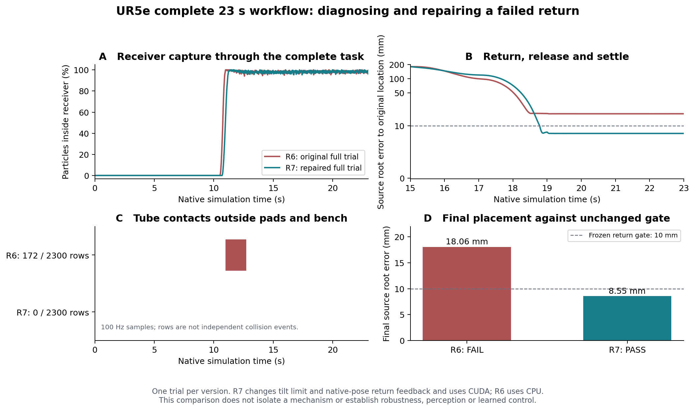
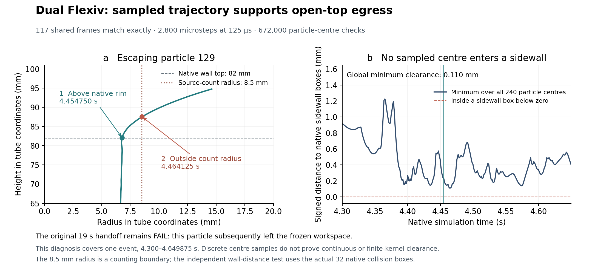
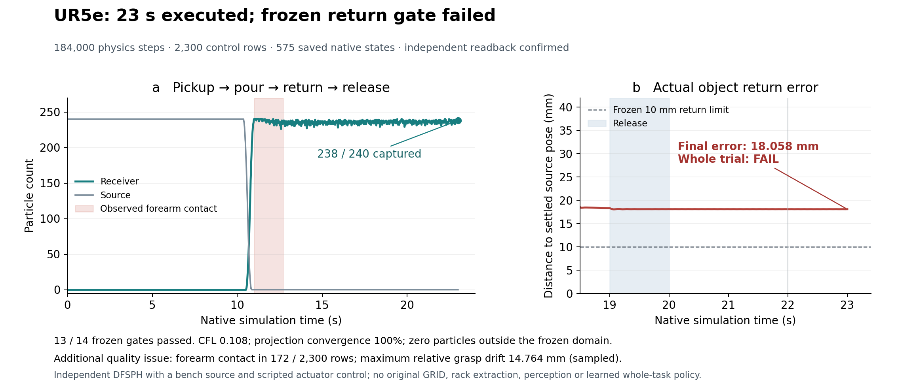
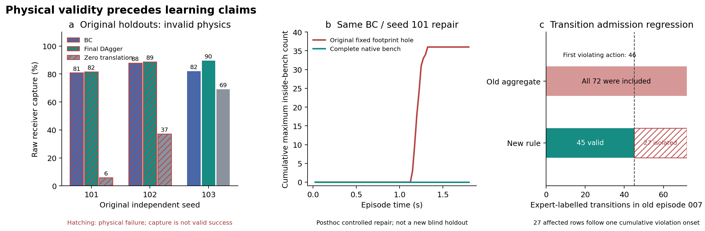
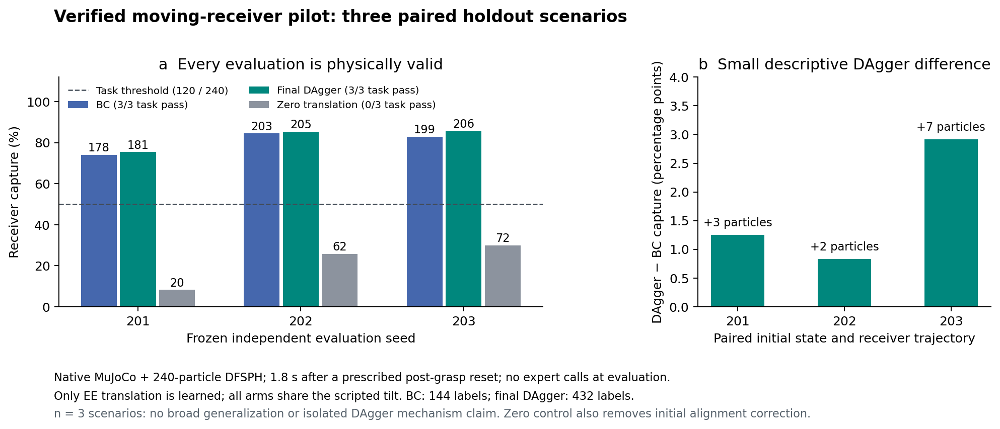
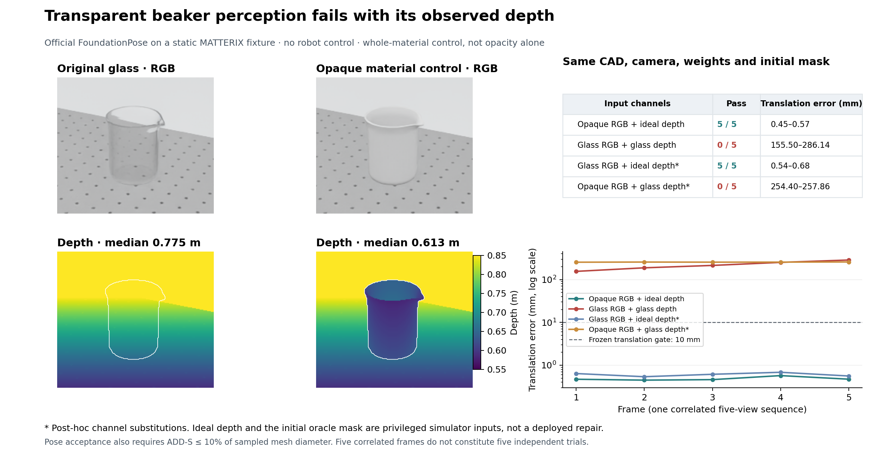
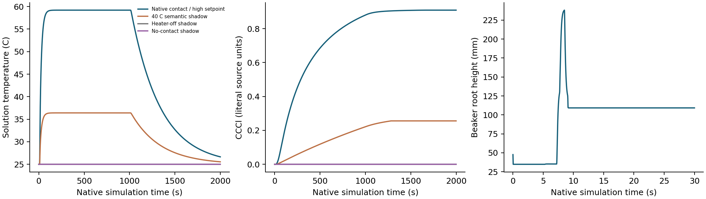

MATTERIX + AUTO-ENGINEERING / SIMULATION FIRST
Complete the reference.
Keep the evidence visible.
从原文逐项复现：场景、物理交互、化学过程、感知、校准与学习。局部实验通过不等于整篇论文复现完成。
The original 13 capability groups are expanded into auditable requirements.
Numerical tests, physical trials and semantic models keep separate boundaries.
Original code, independent reimplementations and missing inputs are distinguished.
LIVE EXECUTION
What is running
Experiment timestamps and publication timestamps are separate. The publisher runs every 10 minutes; an export older than 25 minutes is marked stale.
NEW EXPERIMENTS
Results with their limits
Preserved robot trial · 2026-10-13
UR5e + live DFSPH completed 12.5 s of pickup and pour: 155 / 240 particles reached the receiver. The whole trial failed its stability gate (maximum CFL 1.705, limit 0.4). The raw failure is retained; isolated fixture passes do not supersede this result. BC/DAgger and full robot acceptance remain open.
OT2 replay scale corrected · original failures preserved
The four OT2 clips below preserve all 15 body transforms/scales and 14 nonempty geometry bounds across 2,610 frames. The shell and nonuniform middle-bar scales now match the original asset. This validates recorded geometry mapping; reconstructed fixtures and semantic liquid are still disclosed. The four previous, incorrectly scaled clips remain listed in the failure archive.
239/240 particles captured; return error 8.546 mm is within the frozen 10 mm limit. All 16 local gates pass in one posthoc repair. Return uses simulator ground-truth pose, not perception or learning. A separate audit finds pad–rack contact in 44 saved frames, deepest sampled signed overlap 0.178 mm; this is not whole-robot collision-free execution. Neutral display glass and magenta particles; no optical refraction or liquid surface mesh.
The source tube transfers to receiver-only support, but one of 240 particles leaves the frozen domain; 239 remain in the tube. The whole trial fails. This is scripted native contact with an independent fluid model, bench source, and no subsequent pouring, original GRID or learned cross-robot transfer. Neutral display glass and magenta particles; no optical refraction or liquid surface mesh.
All 14 phases execute through release and retreat. Return error 18.058 mm exceeds the frozen 10 mm limit despite 238/240 captured particles; 172 control samples also contain forearm contact. Final native 23.000 s state is included exactly. Scripted independent backend, bench source; original rack extraction, GRID, perception and learned full task remain open. Neutral display glass and magenta particles; no optical refraction or liquid surface mesh.
1.8 s post-grasp translation-policy test, shown at 4× slow motion. Shared scripted tilt, supplied grasp state, zero evaluation teacher queries. Same frozen seed as BC and zero translation; no learned pickup or original GRID weights. Neutral display glass and magenta particles; no optical refraction or liquid surface mesh.
152/240 at 12.50 s; four particles left the frozen domain. Saved video ends at 12.48 s (154/240); the final 20 ms were not recorded. Independent 240-particle backend; return/release and original GRID equivalence remain open. Magenta particles and neutral display glass; no liquid surface mesh or optical refraction.
240/240 remain in the source. Matched 12.50 s native no-tilt control; recorded states through 12.48 s. Passing this negative control does not establish successful pouring. Magenta particles and neutral display glass; no liquid surface mesh or optical refraction.
1.8 s post-grasp translation-policy test, shown at 4× slow motion. Shared scripted tilt, supplied grasp state, zero evaluation teacher queries; no learned pickup or original GRID weights. Magenta particles and neutral display glass; no liquid surface mesh or optical refraction.
Same held-out scene and shared tilt. Physics valid; capture gate FAIL. 1.8 s post-grasp test shown at 4× slow motion; this paired case is not a multi-seed conclusion. Magenta particles and neutral display glass; no liquid surface mesh or optical refraction.
Full 61 s recorded sequence: insert and load tips, three aspiration/dispense cycles, dispose and return. Semantic attachment follows the paper’s stated mechanism. Reconstructed two-channel reservoir and disposal tray; local volume recipe. Panda station loading is evaluated separately.
Full 61 s recorded sequence: insert and load tips, three aspiration/dispense cycles, dispose and return. Semantic attachment follows the paper’s stated mechanism. Reconstructed two-channel reservoir and disposal tray; local volume recipe. Panda station loading is evaluated separately.
Recorded native motion, 26 s; semantic parcels, 0.5 model µL each. Reconstructed 96-well / 12-channel fixtures on 50 mm risers; physical tip attachment remains open. These are not the original paper’s 6-well / 2-well fixtures.
Recorded native motion, 26 s; semantic parcels, 0.5 model µL each. Reconstructed 96-well / 12-channel fixtures on 50 mm risers; physical tip attachment remains open. These are not the original paper’s 6-well / 2-well fixtures.
2 particles remain outside the receiver. Recorded native states, 3 s; 240 particles / 3.75 model mL. Independent fixture with no robot pickup or learned policy. Pink particle display and neutral glass; no optical refraction or liquid surface mesh.
240 particles remain in the source. Recorded native states, 3 s; 240 particles / 3.75 model mL. Independent fixture with no robot pickup or learned policy. Pink particle display and neutral glass; no optical refraction or liquid surface mesh.
POSTHOC REPAIR · ONE TRIAL PER VERSION
A better return, with control and contact limits still explicit

MATCHED NATIVE REPLAY · 125 µs SAMPLES
The lost particle first clears the open tube rim

COMPLETE EXECUTION · FAILED TASK
238 captured particles, but the return misses its target

FAILURE DIAGNOSIS & CONTROLLED REPAIR
Capture alone does not establish success

RETRAINED POLICY · NEW FROZEN SEEDS
All nine physical evaluations are valid

TRANSPARENT BEAKER · OBSERVED FAILURE
Visible glass does not guarantee usable depth

2000 s NATIVE CONTACT–CHEMISTRY TRIAL
500,000 physics steps, one physical trial

FULL ACCEPTANCE MATRIX
Every requirement, still accountable
Published statistics are comparison targets. Local tolerances must be frozen before confirmation. Failed and incomplete attempts remain in their original denominators.
SOURCE & ASSET BOUNDARIES
What remains unavailable
PRIMARY REFERENCES
Read the originals
Hardware transfer is a separate acceptance dimension. This page reports simulation work; no physical robot success is implied.